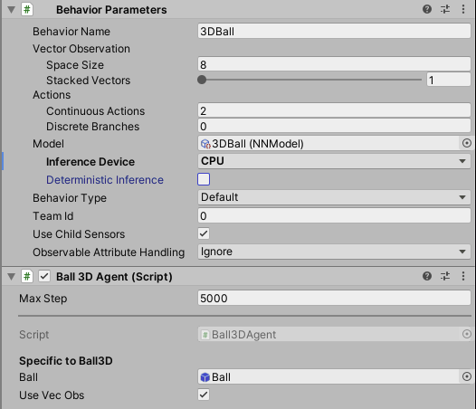

Getting Started Guide
This guide walks through the end-to-end process of opening one of our example environments in Unity, training an Agent in it, and embedding the trained model into the Unity environment. After reading this tutorial, you should be able to train any of the example environments. If you are not familiar with the Unity Engine, view our Background: Unity page for helpful pointers. Additionally, if you're not familiar with machine learning, view our Background: Machine Learning page for a brief overview and helpful pointers.

For this guide, we'll use the 3D Balance Ball environment which contains a number of agent cubes and balls (which are all copies of each other). Each agent cube tries to keep its ball from falling by rotating either horizontally or vertically. In this environment, an agent cube is an Agent that receives a reward for every step that it balances the ball. An agent is also penalized with a negative reward for dropping the ball. The goal of the training process is to have the agents learn to balance the ball on their head.
Let's get started!
Installation
If you haven't already, follow the installation instructions. Afterwards, open the Unity Project that contains all the example environments:
- Open the Package Manager Window by navigating to
Window -> Package Managerin the menu. - Navigate to the ML-Agents Package and click on it.
- Find the
3D Ballsample and clickImport. - In the Project window, go to the
Assets/ML-Agents/Examples/3DBall/Scenesfolder and open the3DBallscene file.
Understanding a Unity Environment
An agent is an autonomous actor that observes and interacts with an environment. In the context of Unity, an environment is a scene containing one or more Agent objects, and, of course, the other entities that an agent interacts with.

Note: In Unity, the base object of everything in a scene is the GameObject. The GameObject is essentially a container for everything else, including behaviors, graphics, physics, etc. To see the components that make up a GameObject, select the GameObject in the Scene window, and open the Inspector window. The Inspector shows every component on a GameObject.
The first thing you may notice after opening the 3D Balance Ball scene is that it contains not one, but several agent cubes. Each agent cube in the scene is an independent agent, but they all share the same Behavior. 3D Balance Ball does this to speed up training since all twelve agents contribute to training in parallel.
Agent
The Agent is the actor that observes and takes actions in the environment. In the 3D Balance Ball environment, the Agent components are placed on the twelve "Agent" GameObjects. The base Agent object has a few properties that affect its behavior:
- Behavior Parameters — Every Agent must have a Behavior. The Behavior determines how an Agent makes decisions.
- Max Step — Defines how many simulation steps can occur before the Agent's episode ends. In 3D Balance Ball, an Agent restarts after 5000 steps.
Behavior Parameters : Vector Observation Space
Before making a decision, an agent collects its observation about its state in the world. The vector observation is a vector of floating point numbers which contain relevant information for the agent to make decisions.
The Behavior Parameters of the 3D Balance Ball example uses a Space Size of 8.
This means that the feature vector containing the Agent's observations contains
eight elements: the x and z components of the agent cube's rotation and the
x, y, and z components of the ball's relative position and velocity.
Behavior Parameters : Actions
An Agent is given instructions in the form of actions.
ML-Agents Toolkit classifies actions into two types: continuous and discrete.
The 3D Balance Ball example is programmed to use continuous actions, which
are a vector of floating-point numbers that can vary continuously. More specifically,
it uses a Space Size of 2 to control the amount of x and z rotations to apply to
itself to keep the ball balanced on its head.
Running a pre-trained model
We include pre-trained models for our agents (.onnx files) and we use the
Unity Inference Engine to run these models inside
Unity. In this section, we will use the pre-trained model for the 3D Ball
example.
- In the Project window, go to the
Assets/ML-Agents/Examples/3DBall/Prefabsfolder. Expand3DBalland click on theAgentprefab. You should see theAgentprefab in the Inspector window.
Note: The platforms in the 3DBall scene were created using the 3DBall
prefab. Instead of updating all 12 platforms individually, you can update the
3DBall prefab instead.

- In the Project window, drag the 3DBall Model located in
Assets/ML-Agents/Examples/3DBall/TFModelsinto theModelproperty underBehavior Parameters (Script)component in the Agent GameObject Inspector window.

- You should notice that each
Agentunder each3DBallin the Hierarchy windows now contains 3DBall asModelon theBehavior Parameters. Note : You can modify multiple game objects in a scene by selecting them all at once using the search bar in the Scene Hierarchy. - Set the Inference Device to use for this model as
CPU. - Click the Play button in the Unity Editor and you will see the platforms balance the balls using the pre-trained model.
Training a new model with Reinforcement Learning
While we provide pre-trained models for the agents in this environment, any
environment you make yourself will require training agents from scratch to
generate a new model file. In this section we will demonstrate how to use the
reinforcement learning algorithms that are part of the ML-Agents Python package
to accomplish this. We have provided a convenient command mlagents-learn which
accepts arguments used to configure both training and inference phases.
Training the environment
- Open a command or terminal window.
- Navigate to the folder where you cloned the
ml-agentsrepository. Note: If you followed the default installation, then you should be able to runmlagents-learnfrom any directory. - Run
mlagents-learn config/ppo/3DBall.yaml --run-id=first3DBallRun. config/ppo/3DBall.yamlis the path to a default training configuration file that we provide. Theconfig/ppofolder includes training configuration files for all our example environments, including 3DBall.run-idis a unique name for this training session.- When the message "Start training by pressing the Play button in the Unity Editor" is displayed on the screen, you can press the Play button in Unity to start training in the Editor.
If mlagents-learn runs correctly and starts training, you should see something
like this:
INFO:mlagents_envs:
'Ball3DAcademy' started successfully!
Unity Academy name: Ball3DAcademy
INFO:mlagents_envs:Connected new brain:
Unity brain name: 3DBallLearning
Number of Visual Observations (per agent): 0
Vector Observation space size (per agent): 8
Number of stacked Vector Observation: 1
INFO:mlagents_envs:Hyperparameters for the PPO Trainer of brain 3DBallLearning:
batch_size: 64
beta: 0.001
buffer_size: 12000
epsilon: 0.2
gamma: 0.995
hidden_units: 128
lambd: 0.99
learning_rate: 0.0003
max_steps: 5.0e4
normalize: True
num_epoch: 3
num_layers: 2
time_horizon: 1000
sequence_length: 64
summary_freq: 1000
use_recurrent: False
memory_size: 256
use_curiosity: False
curiosity_strength: 0.01
curiosity_enc_size: 128
output_path: ./results/first3DBallRun/3DBallLearning
INFO:mlagents.trainers: first3DBallRun: 3DBallLearning: Step: 1000. Mean Reward: 1.242. Std of Reward: 0.746. Training.
INFO:mlagents.trainers: first3DBallRun: 3DBallLearning: Step: 2000. Mean Reward: 1.319. Std of Reward: 0.693. Training.
INFO:mlagents.trainers: first3DBallRun: 3DBallLearning: Step: 3000. Mean Reward: 1.804. Std of Reward: 1.056. Training.
INFO:mlagents.trainers: first3DBallRun: 3DBallLearning: Step: 4000. Mean Reward: 2.151. Std of Reward: 1.432. Training.
INFO:mlagents.trainers: first3DBallRun: 3DBallLearning: Step: 5000. Mean Reward: 3.175. Std of Reward: 2.250. Training.
INFO:mlagents.trainers: first3DBallRun: 3DBallLearning: Step: 6000. Mean Reward: 4.898. Std of Reward: 4.019. Training.
INFO:mlagents.trainers: first3DBallRun: 3DBallLearning: Step: 7000. Mean Reward: 6.716. Std of Reward: 5.125. Training.
INFO:mlagents.trainers: first3DBallRun: 3DBallLearning: Step: 8000. Mean Reward: 12.124. Std of Reward: 11.929. Training.
INFO:mlagents.trainers: first3DBallRun: 3DBallLearning: Step: 9000. Mean Reward: 18.151. Std of Reward: 16.871. Training.
INFO:mlagents.trainers: first3DBallRun: 3DBallLearning: Step: 10000. Mean Reward: 27.284. Std of Reward: 28.667. Training.
Note how the Mean Reward value printed to the screen increases as training
progresses. This is a positive sign that training is succeeding.
Note: You can train using an executable rather than the Editor. To do so, follow the instructions in Using an Executable.
Observing Training Progress
Once you start training using mlagents-learn in the way described in the
previous section, the ml-agents directory will contain a results
directory. In order to observe the training process in more detail, you can use
TensorBoard. From the command line run:
tensorboard --logdir results
Then navigate to localhost:6006 in your browser to view the TensorBoard
summary statistics as shown below. For the purposes of this section, the most
important statistic is Environment/Cumulative Reward which should increase
throughout training, eventually converging close to 100 which is the maximum
reward the agent can accumulate.

Embedding the model into the Unity Environment
Once the training process completes, and the training process saves the model
(denoted by the Saved Model message) you can add it to the Unity project and
use it with compatible Agents (the Agents that generated the model). Note:
Do not just close the Unity Window once the Saved Model message appears.
Either wait for the training process to close the window or press Ctrl+C at
the command-line prompt. If you close the window manually, the .onnx file
containing the trained model is not exported into the ml-agents folder.
If you've quit the training early using Ctrl+C and want to resume training,
run the same command again, appending the --resume flag:
mlagents-learn config/ppo/3DBall.yaml --run-id=first3DBallRun --resume
Your trained model will be at results/<run-identifier>/<behavior_name>.onnx where
<behavior_name> is the name of the Behavior Name of the agents corresponding
to the model. This file corresponds to your model's latest checkpoint. You can
now embed this trained model into your Agents by following the steps below,
which is similar to the steps described above.
- Move your model file into
Project/Assets/ML-Agents/Examples/3DBall/TFModels/. - Open the Unity Editor, and select the 3DBall scene as described above.
- Select the 3DBall prefab Agent object.
- Drag the
<behavior_name>.onnxfile from the Project window of the Editor to the Model placeholder in the Ball3DAgent inspector window. - Press the Play button at the top of the Editor.
Next Steps
- For more information on the ML-Agents Toolkit, in addition to helpful background, check out the ML-Agents Toolkit Overview page.
- For a "Hello World" introduction to creating your own Learning Environment, check out the Making a New Learning Environment page.
- For an overview on the more complex example environments that are provided in this toolkit, check out the Example Environments page.
- For more information on the various training options available, check out the Training ML-Agents page.